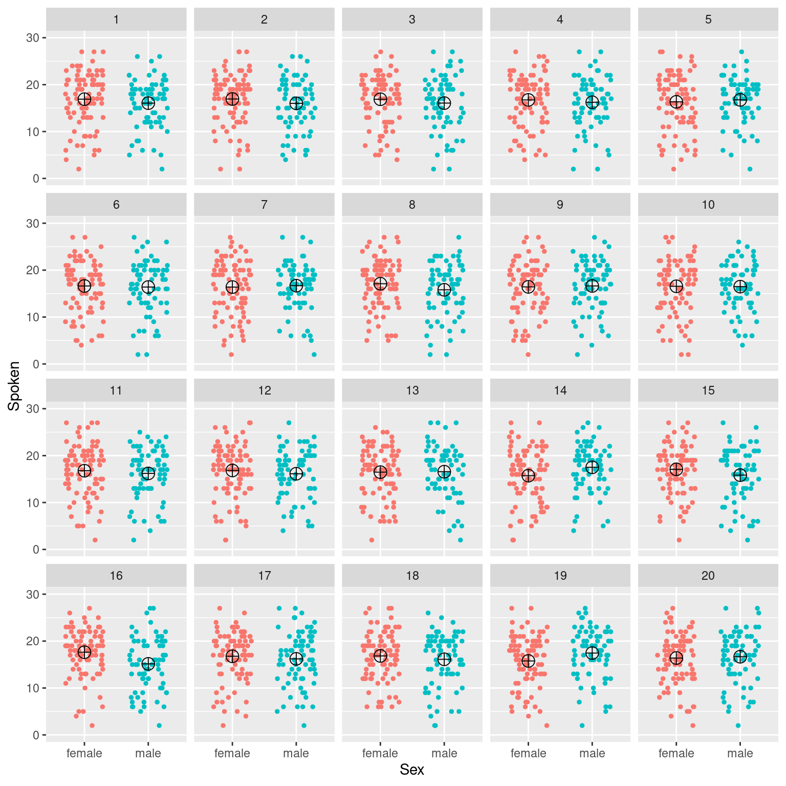
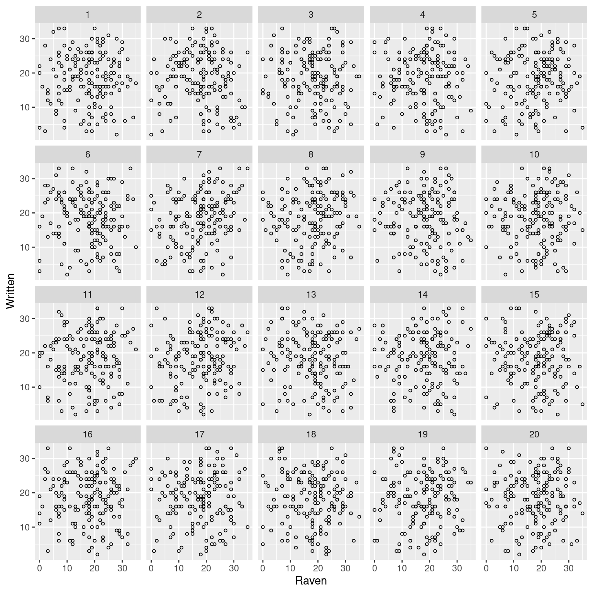
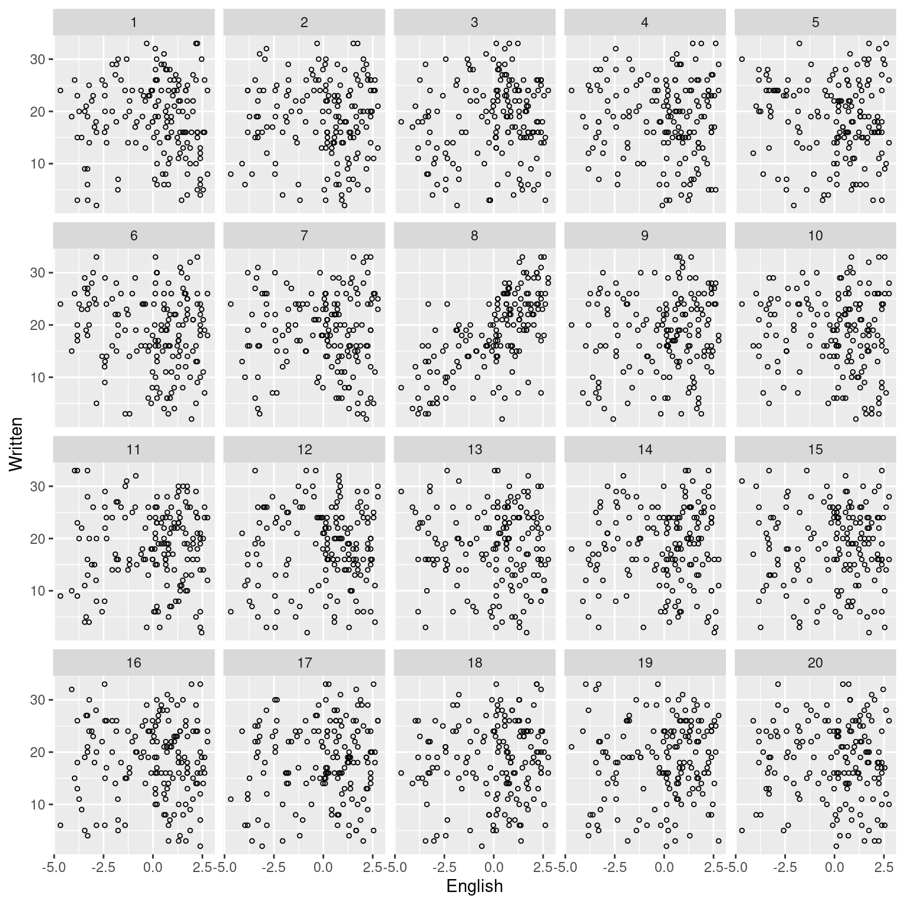

dat <- read.csv("http://janhove.github.io/datasets/sinergia.csv")
table(dat$Sex)
female male
90 73 Jan Vanhove
September 12, 2014
p-values are confusing creatures–not just to students taking their first statistics course but to seasoned researchers, too. To fully understand how p-values are calculated, you need to know a good deal of mathematical and statistical concepts (e.g. probability distributions, standard deviations, the central limit theorem, null hypotheses), and these take a while to settle in. But to explain the meaning of p-values, I think we can get by without such sophistication. So here you have it, a purely graphical explanation of p-values.
The statistical tests you’re most likely to run into are the two-sample t-test and its big brother, analysis of variance (ANOVA). These tests are used to establish whether the difference between two or more group averages are due to chance or whether their is some underlying system to them.
For this example, I use data from my Ph.D. project. The goal of this analysis (not of my thesis, though) is to establish whether men and women differ in their ability to understand spoken words in an unknown but related foreign language. The following R code reads in the data, tabulates the number of men and women (table()) and shows the distribution of the participants’ scores on the listening test (hist()). To reproduce this analysis, you’ll need to install R, which is freely available from http://r-project.org/–and while you’re at it, download a graphical user interface like RStudio.
To establish whether men and women differ ‘significantly’ from one another, we’d usually plot the data, run a t-test, and check the reported p-value, but an alternative approach is discussed by Wickham and colleagues.
The basic idea is as follows. If there is a systematic relationship between two variables (e.g. a difference in group averages), then we ought to be able to tell the real dataset from fake datasets that were randomly generated without an underlying systematic relationship. To generate fake but ‘realistic’ datasets, we can permute the real data, i.e., randomly switch the datapoints between the groups. Then, we organise a line-up (like in the movies!) with the real dataset hidden among several fake datasets. If we can distinguish the real dataset from the fake ones, we have some evidence that there is some degree of system in the real data that is not present in the fake data.
This procedure is implemented in the nullabor package for R, which relies on the ggplot2 package. Make sure you have these two packages installed on your machine (install.packages()).
The following code plots the listening scores for all participants according to whether they’re male or female, but the real dataset is hidden among 19 fake (permuted) datasets. The crosshairs mark the means for each sex in each dataset. Can you pick out the real dataset? (The code to generate this plot is somewhat complicated but is of no consequence to the argument; don’t lose yourself in it.)
Update (2023-08-25): Compared to the original blog post, I replaced the fun.y argument, which is now deprecated, by fun.
p <- ggplot(dat, aes(Sex, Spoken)) %+%
lineup(null_permute("Spoken"), dat) +
scale_y_continuous(limits = c(0, 30)) +
#geom_boxplot(outlier.shape = NA, na.rm = TRUE) +
geom_point(size = 1,
aes(col=Sex),
position = position_jitter(w=0.3, h = 0)) +
stat_summary(fun = mean,
geom = "point",
shape = 10, size = 4) +
guides(colour = "none") +
facet_wrap(~ .sample)decrypt("sFZM ldbd 32 PN43b3N2 5g")
Most sample means are pretty similar, but not entirely identical, to each other. Due to the randomness inherent in generating permutations, some differences between the sample means for men and women are in fact expected. This is known as sampling error. If men’s and women’s listening scores didn’t differ systematically from one another, we wouldn’t be able to pick out the real dataset with above-chance accuracy, i.e., we would only have a 1 in 20 (5%) chance of picking the right answer.
If there were some systematic difference between the two groups, however, we would be able to beat those odds. Eye-balling these plots, I’d say that Panel 16 stands out in that the difference between men and women is larger than in the other panels. Using the encrypted code provided above, we can check whether this hunch is correct:
It is. If there were no systematic difference between the two groups (``if the null hypothesis were correct’‘, in statistics parlance), I’d only have had a 1-in-20 chance of picking the right answer, yet I managed to do so. Put differently, it’s pretty unlikely (5%) to observe this noticeable a difference between the two groups if no systematic pattern existed, and from this we’d usually conclude that there is some systematic pattern. This, in effect, is what is expressed by’p = 0.05’. To establish ‘p = 0.01’ using this procedure, you’d have to be able to pick out the actual dataset when it’s hidden among 99 fake datasets – but that wouldn’t work now since you already know how it looks.
A cautionary note, though: While we’ve established with some confidence that women have differerent (higher) listening scores from men, we’ve not demonstrated that it’s the sex difference that causes this difference. In this study, the men were on average somewhat older than the women, for instance.
The graphical test can also be applied to the relationship between two continuous variables. Usually, we’d compute a correlation test or fit a regression model to get a p-value for such a situation.
The following plot shows the relationship between a measure of intelligence (‘Raven’) and the participants’ performance on a reading task. The real dataset is again hidden among 19 fake datasets that were generated without an underlying pattern. Can you spot the real dataset?
q <- ggplot(dat, aes(Raven, Written)) %+%
lineup(null_permute("Raven"), dat, n = 20) +
geom_point(size = 1, shape = 1) +
facet_wrap(~ .sample)decrypt("sFZM ldbd 32 PN43b3N2 ua")
You might be able to spot the real dataset, but I had to peek at the right answer to know it was Panel 7. In this case, I wasn’t able to beat the odds since the real data look too similar to the fake data, suggesting that ‘no systematic pattern’ is a more parsimonious relationship.
Compare this to the following plot, which shows the participants’ reading scores in function of their English skills.
r <- ggplot(dat, aes(English, Written)) %+%
lineup(null_permute("English"), dat, n = 20) +
geom_point(size = 1, shape = 1) +
facet_wrap(~ .sample)decrypt("sFZM ldbd 32 PN43b3N2 uJ")
If you picked Panel 8 because its discernible positive trend, you’d be right. A statistical test would likely yield a p-value lower than 0.05. In fact, in this case, you’d probably be able to pick out the real data from among a much larger number of fake datasets.
Obviously there’s some subjectivity inherent in this type of analysis, and the procedure breaks down when you already know the shape of the actual data. To increase its reliability, you could try to enlist the help of a panel of independent judges who are not involved in the research project. That said, the goal of this post was to clarify what enigmatic phrases like ‘p < 0.05’ express: the degree of unusualness of the data at hand compared to data with no underlying systematic pattern.
─ Session info ───────────────────────────────────────────────────────────────
setting value
version R version 4.3.1 (2023-06-16)
os Ubuntu 22.04.3 LTS
system x86_64, linux-gnu
ui X11
language en_US
collate en_US.UTF-8
ctype en_US.UTF-8
tz Europe/Zurich
date 2023-08-25
pandoc 3.1.1 @ /usr/lib/rstudio/resources/app/bin/quarto/bin/tools/ (via rmarkdown)
─ Packages ───────────────────────────────────────────────────────────────────
package * version date (UTC) lib source
cachem 1.0.6 2021-08-19 [2] CRAN (R 4.2.0)
callr 3.7.3 2022-11-02 [1] CRAN (R 4.3.1)
class 7.3-22 2023-05-03 [4] CRAN (R 4.3.1)
cli 3.6.1 2023-03-23 [1] CRAN (R 4.3.0)
cluster 2.1.4 2022-08-22 [4] CRAN (R 4.2.1)
colorspace 2.1-0 2023-01-23 [1] CRAN (R 4.3.0)
crayon 1.5.2 2022-09-29 [1] CRAN (R 4.3.1)
DEoptimR 1.1-0 2023-07-12 [1] CRAN (R 4.3.1)
devtools 2.4.5 2022-10-11 [1] CRAN (R 4.3.1)
digest 0.6.29 2021-12-01 [2] CRAN (R 4.2.0)
diptest 0.76-0 2021-05-04 [1] CRAN (R 4.3.1)
dplyr 1.1.2 2023-04-20 [1] CRAN (R 4.3.0)
ellipsis 0.3.2 2021-04-29 [2] CRAN (R 4.2.0)
evaluate 0.15 2022-02-18 [2] CRAN (R 4.2.0)
fansi 1.0.4 2023-01-22 [1] CRAN (R 4.3.1)
farver 2.1.1 2022-07-06 [1] CRAN (R 4.3.0)
fastmap 1.1.0 2021-01-25 [2] CRAN (R 4.2.0)
flexmix 2.3-19 2023-03-16 [1] CRAN (R 4.3.1)
fpc 2.2-10 2023-01-07 [1] CRAN (R 4.3.1)
fs 1.5.2 2021-12-08 [2] CRAN (R 4.2.0)
generics 0.1.3 2022-07-05 [1] CRAN (R 4.3.0)
ggplot2 * 3.4.2 2023-04-03 [1] CRAN (R 4.3.0)
glue 1.6.2 2022-02-24 [2] CRAN (R 4.2.0)
gtable 0.3.3 2023-03-21 [1] CRAN (R 4.3.0)
htmltools 0.5.5 2023-03-23 [1] CRAN (R 4.3.0)
htmlwidgets 1.6.2 2023-03-17 [1] CRAN (R 4.3.1)
httpuv 1.6.11 2023-05-11 [1] CRAN (R 4.3.1)
jsonlite 1.8.7 2023-06-29 [1] CRAN (R 4.3.1)
kernlab 0.9-32 2023-01-31 [1] CRAN (R 4.3.1)
knitr 1.39 2022-04-26 [2] CRAN (R 4.2.0)
labeling 0.4.2 2020-10-20 [1] CRAN (R 4.3.0)
later 1.3.1 2023-05-02 [1] CRAN (R 4.3.1)
lattice 0.21-8 2023-04-05 [4] CRAN (R 4.3.0)
lifecycle 1.0.3 2022-10-07 [1] CRAN (R 4.3.0)
magrittr 2.0.3 2022-03-30 [1] CRAN (R 4.3.0)
MASS 7.3-60 2023-05-04 [4] CRAN (R 4.3.1)
mclust 6.0.0 2022-10-31 [1] CRAN (R 4.3.1)
memoise 2.0.1 2021-11-26 [2] CRAN (R 4.2.0)
mime 0.10 2021-02-13 [2] CRAN (R 4.0.2)
miniUI 0.1.1.1 2018-05-18 [1] CRAN (R 4.3.1)
modeltools 0.2-23 2020-03-05 [1] CRAN (R 4.3.1)
moments 0.14.1 2022-05-02 [1] CRAN (R 4.3.1)
munsell 0.5.0 2018-06-12 [1] CRAN (R 4.3.0)
nnet 7.3-19 2023-05-03 [4] CRAN (R 4.3.1)
nullabor * 0.3.9 2020-02-25 [1] CRAN (R 4.3.1)
pillar 1.9.0 2023-03-22 [1] CRAN (R 4.3.0)
pkgbuild 1.4.2 2023-06-26 [1] CRAN (R 4.3.1)
pkgconfig 2.0.3 2019-09-22 [2] CRAN (R 4.2.0)
pkgload 1.3.2.1 2023-07-08 [1] CRAN (R 4.3.1)
prabclus 2.3-2 2020-01-08 [1] CRAN (R 4.3.1)
prettyunits 1.1.1 2020-01-24 [2] CRAN (R 4.2.0)
processx 3.8.2 2023-06-30 [1] CRAN (R 4.3.1)
profvis 0.3.8 2023-05-02 [1] CRAN (R 4.3.1)
promises 1.2.0.1 2021-02-11 [1] CRAN (R 4.3.1)
ps 1.7.5 2023-04-18 [1] CRAN (R 4.3.1)
purrr 1.0.1 2023-01-10 [1] CRAN (R 4.3.0)
R6 2.5.1 2021-08-19 [2] CRAN (R 4.2.0)
Rcpp 1.0.11 2023-07-06 [1] CRAN (R 4.3.1)
remotes 2.4.2 2021-11-30 [2] CRAN (R 4.2.0)
rlang 1.1.1 2023-04-28 [1] CRAN (R 4.3.0)
rmarkdown 2.21 2023-03-26 [1] CRAN (R 4.3.0)
robustbase 0.99-0 2023-06-16 [1] CRAN (R 4.3.1)
rstudioapi 0.14 2022-08-22 [1] CRAN (R 4.3.0)
scales 1.2.1 2022-08-20 [1] CRAN (R 4.3.0)
sessioninfo 1.2.2 2021-12-06 [2] CRAN (R 4.2.0)
shiny 1.7.4.1 2023-07-06 [1] CRAN (R 4.3.1)
stringi 1.7.12 2023-01-11 [1] CRAN (R 4.3.1)
stringr 1.5.0 2022-12-02 [1] CRAN (R 4.3.0)
tibble 3.2.1 2023-03-20 [1] CRAN (R 4.3.0)
tidyr 1.3.0 2023-01-24 [1] CRAN (R 4.3.0)
tidyselect 1.2.0 2022-10-10 [1] CRAN (R 4.3.0)
urlchecker 1.0.1 2021-11-30 [1] CRAN (R 4.3.1)
usethis 2.2.2 2023-07-06 [1] CRAN (R 4.3.1)
utf8 1.2.3 2023-01-31 [1] CRAN (R 4.3.1)
vctrs 0.6.3 2023-06-14 [1] CRAN (R 4.3.0)
withr 2.5.0 2022-03-03 [2] CRAN (R 4.2.0)
xfun 0.39 2023-04-20 [1] CRAN (R 4.3.0)
xtable 1.8-4 2019-04-21 [1] CRAN (R 4.3.1)
yaml 2.3.5 2022-02-21 [2] CRAN (R 4.2.0)
[1] /home/jan/R/x86_64-pc-linux-gnu-library/4.3
[2] /usr/local/lib/R/site-library
[3] /usr/lib/R/site-library
[4] /usr/lib/R/library
──────────────────────────────────────────────────────────────────────────────